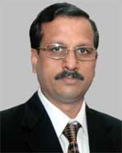

A Few Words About Ourselves
Autism Therapy Centre, Bhubaneswar is the outcome of strong determination, commitment and sustained efforts of a few parents of children affected with autism. The centre was founded in August,2008 and has just completed two years. It functioned for some time in Sai International School and is presently running in Bhubaneswar Future School. During its short span of existence it has faced many problems and challenges, which it has overcome successfully-thanks to the timely support of well-wishers and the resolute determination of the parents.
The Therapy Centre is managed by a trust called “Manage Autism Now (MAN)” since June, 2010. The trust has five trustees including the Chairman and creator of the trust, who also happens to be a parent of a child affected by autism. Presently its financial resources are limited to contributions by the parents of the special kids admitted in the Therapy Centre. Consequently there is a wide gap between the resources generated and the requirement of funds for running the Therapy Centre properly. Efforts are on to raise resources through individual donations to start with and also to approach philanthropic organisations and Government for grants.
Autism is a complex neurological disorder impacting the normal development process of the child. Its manifestations are:-impairment in social interaction, impairment in communication, restricted interests and repetitive behaviour. As yet one does not know for sure what is the cause of autism. Studies made so for suggest that autism is probably caused by a combination of genetic and environmental factors.
It is true that children do not outgrow autism, or in other words it may not be possible to overcome all the impairments of the faculties of a human being caused by autism. Studies show that early diagnosis and intervention lead to significant results.
Early detection is therefore extremely crucial for effective intervention in all cases of autism apectrum disorder (ASD).The Autism Therapy Centre, Bhubaneswar is fully conscious of this and is giving emphasis on creating public awareness in this regard, besides providing effective intervention to the special kids having autism spectrum disorder. Our intervention covers Behavioural Therapy, Speech Therapy, Social skills training, Yoga and meditation Therapy, Ayurvedic treatment, Sensory integration(S.I)Therapy, learning through computers and Alternative mode to develop communication skills.
The centre also provides referral service to parents/families and professionals who work with them. The aim of the organisation is to improve the lives of all affected by autism. The Autism Therapy Centre supported by the Parents Association under the control and guidance of MAN Trust is trying to do this by increasing public awareness about the day–to-day issues faced by children on the spectrum, and providing the latest information regarding treatment and education.
The Therapy centre and the parents association are immensely grateful to Future Bhubaneswar School for their moral, material and logistic support which facilitated the smooth functioning of the Centre enabling it to its objectives to a large measure. When the centre was in dire need of suitable accommodation, Bhubaneswar Future School not only made available adequate and congenial accommodation it also provided moral and logistic support for the smooth functioning of the centre.
Proper sensitisation and orientation of the therapist/instructors of the Therapy Centre is very important. Similarly creating awareness among the parents about the various problems of autism and the method of dealing with them is equally important. The Trust, besides managing the A.T.C., is organizing seminars, symposiums, workshops on various aspects of autism to develop awareness and focus attention on effective measures to handle the problems of autism.
For more focused attention and effective supervision one Executive Committee has been constituted to oversee the activities of the A.T.C.
This Committee is headed by
 |
Mr. Satakadi Hota (Executive President) He is presently chief Editor of daily news paper "THE SAMAY", retired as General Manager of South Eastern Railway. He was commissioner and special secretary Govt. of Odisha in Transport Department for over five years. |
Dr. Hara Prassanna Mishra , Advisor, Executive body ATC Dr. Hara Prassanna Mishra, M.Sc. in Applied Chemistry (Calcutta), Doctorate in Engineering (West Germany), former Chairman of IPICOL, former CEO and Managing Director of IDCOL, Associated with many Industrial Units like NALCO,FACOR etc. He is a man of international repute. |
|
| It has 07 (seven) other members | |
Ms.Swarna Lata Mishra (Chairman) Senior Teaching Faculty, Department. of STATISTICS, a parent of a child affected by autism |
|
Mr. Madan Mohan Panda (Trustee) A former bureaucrat with varied experience in administration and management of social problems. Held many sensitive assignments including that of Managing Director, Odisha State Civil Supplies Corporation, Addl. Secretary Food Supplies and Consumer Welfare Department and Special Secretary to the Chief Minister, Odisha Associated with the D.A.V Schools of Bhubaneswar for the last more than 25 years as a Member of the Managing Committees. Chairman of D.A.V. school, unit 8 for the last eleven years. Presently chairman of D.A.V. School unit-8, D.A.V. school, Chandrasekharpur and D.A.V. school Pokhariput. He is associated with several socio-cultural organisations too. A former President of the Sahidnagar Sanskrutika Samity he is also a member of the Executive Committees of Dakhina Odisha Unnayana Parishad and Confederation of Citizens' Associations |
|
Ms. Nalini Menon (Trustee) Director, AUTISM Centre, Spastic Society of Karnataka, Bangalore. |
|
|  | Mr.Sanjeev Nayak (Trustee) Mr Sanjeev Nayak is an entrepreneur and started his entrepreneurship in 1989 as the Director of Oricom Systems (P) Ltd and continuing till date. He became a trustee and Director of Silicon Institute of Technology, which is one of the premier engineering colleges in Orissa. He has served as the founding president of Information Technology Association of Orissa (ITAO) from 1998-1999. He is working as the Trustee of Future Bhubaneswar School and representing as Governing Body member and management committee member of three premier schools in Bhubaneswar city under the banner of D.A.V. Public schools. He is also contributing in various roles in NGO sectors such as treasurer of Open learning Systems, a NGO working for spastics and autism children and Manage Autism Now (MAN). He holds bachelors degree in Civil Engineering from BITS Pilani and MBA from XIM Bhubaneswar. |
Mr.Girish Chandra Das (Managing Trustee) Girish Chandra Das, Managing trustee of ATC, Post Graduate in Political Science has 25 years of work experience in Orissa Sponge Iron Steel Ltd. (OSIL) as Corporate Manager. He is also managing editor of “Amrutayan” a monthly oriya magazine since 1980, and Secretary, “Sanskruti” the cultural organization of OSIL, Also he has compiled 4 books in 2 volumes in both (English and oriya)named “comprehensive History and Culture of Orissa-1994”. |
|
Ms. Asha Hansa , (Special Invitees) Prof Asha Hans is former Professor of Political Science and Director School of Women’s Studies Utkal University. Together with Ashok Hans she founded Shanta Memorial Rehabilitation Centre (SMRC) an organization working for the rights of persons with disabilities. She is presently Executive Vice President of SMRC. |
|
Mr.Priya Ranjan Dash (Special Invitees) Mr. P. R. Dash has 38 years of experience as an executive of S.V.NIRTAR,& ALIMCO, and retired as the UNIT HEAD of ALIMCO’s AUXILARY PRODUCTION CENTRE. He was the team leader of ALMICO TEAM to Afghanistan in 2002, member of the entourage of the then President of India H.E. Dr. APJ Abdul Kalam to Tanzania. Presently he is the advisor to the State Commission for PWDs, member State Resource Group SSA Odisha, guest faculty to staff training centers of Insurances, Banks, S.V.NIRTAR etc. |
|
The Centre has a vision for providing for all and considers the ability of every Autistic person a valuable asset which could be put to use to harness the potential of the person for improvement to make him a part of the Mainstream of the Society |
|